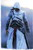

Verõfényes vasárnap délután a Hõsök
terén. A híradások szerint kétszázötvenezer ember vett részt a civil szervezetek által kezdeményezett
és szervezett megmozduláson. Hat óra körül az utolsó felszólaló bejelenti,hogy a rendezvénynek vége, menjen mindenki haza, de mégse, mert folytatják,
mindhalálig.
Ekkor érkezik a parancs
a gárdistáknak: irány a Kossuth tér, végig az Andrássy úton. A Gárda megindul az élen, néhány
ezer tüntetõ követi õket. Rendõri „ellenállásba” elõször a Kodály körönd
magasságában ütközik a csapat, melyet nemes egyszerûséggel kikerülnek. Az Oktogonnál már
komolyabb a droidok fala, de csak megadják magukat a sünök, vonul a tömeg tovább, lelkesen.
Az utolsó akadály a Kossuth tér elõtt vár a gárdistákra és a tüntetõkre, de a rend éber õrei
- a szervezettség, a fegyelem, s nem utolsó sorban a létszám hatására - végül megadják magukat,
sorfalat nyitnak, s miénk a Kossuth tér! Nagyszerû pillanatok ezek, az emberek szíve együtt
dobog, egyre hevesebben.
Beszédek hangzanak el,
mindenki boldog, az élet szép, csak a kormány szar, de ezt már tudjuk egy ideje. Aztán
megjelenik Gonda László „ordibátorautó-színpadán” Budaházy Gyuri, s kérdõre vonja
az Országház elõtt sündörgõ, sorfalat álló droidokat, hogy ugyan már, miért nem az édes
anyukájuk közelében tartózkodnak, s hogy miért viselkednek görénymód, amikor sünök? Egy
gárdista igyekszik kedvenc Gyurinknak elmagyarázni, hogy ez a demonstráció most kivételesen
nem arról szól, volna kedves lefáradni a színpadról, meg különben is, ma kétszer is sorfalat
nyitottak a zsaruk, erõs négyesre vizsgáztak kompromisszumkészségbõl. (Innen üzenem F.K.-nak:
Köszönjük!) A mindig higgadt Budaházy erre megkérdezi, hogy „miért, ki vagy te, mit
képzelsz magadról?”, de a mikrofont õ bizony nem adja, de nem ám! Majd a Gárda felé
fordulva megkérdezi, hogy õk mit csináltak, miért nem utálják annyira a rendõröket, mint õ,
miért nem rohamoznak, satöbbi. Mindezt olyan hangsúllyal, mintha õkelme hozta volna létre a
Magyar Gárdát, õ szerezte volna be a gárdisták felszerelését, s õ finanszírozná a buszokat,
amelyekkel éppen vidékrõl tért vissza a gárdisták többsége.
Gyurink nem hallgat a szép szóra, ellenérvek nem érdeklik.
Eközben a téren állók értelmesebbik fele hallgat, egy része pedig „Budaházy!
Budaházy!” kiáltásokkal harsogja tele az étert, Gyuri díszkísérete pedig kész
nekirohanni a Magyar Gárda 500 kipróbált legényének, s leányának…
Kiss Róbert fõkapitány elõbb visszaparancsolja a rendõrsorfal és
a tüntetõk közt felvonult biztosító egységeket, majd kivonja az állományt a Kossuth térrõl.
Az emberek egy része még kéri a Gárdát, hogy ne menjen el, de már késõ.
Eddig a könnyed hangvételû történet, a következõkben kicsit
keményebbre váltok, amolyan nyílt levél stílusban. Elnézést kérek azon Olvasóktól, akik
mívesebb tollforgatáshoz szoktak, tõlem ennyi telik.
„Kedves”
Budaházy Gyuri!
Azzal kell kezdenem,
hogy régóta bírod a tiszteletem. Vagyis bírtad. A hídblokád hõs harcosa, az EU-ellenes
kampány zászlóvivõje, 2006-ban a Szabadság tér (ide még visszatérünk…) címerleverõje,
majd mindenki bujdosó betyárja voltál nekem. 2007 március idusán miattad indultunk el az
Oktogon felé, hogy kiszabadítsunk az Aradi utcából… Ej, be régen is volt… Jött
Hunnia (tényleg, hol van?), majd 2008 szeptember huszadika, legvégül a 12
pont.
És te vonod kérdõre a gárdistákat? Te
kérded, mit tettek le az asztalra? Milyen jogon állnak a Kossuth téren? Milyen jogon állnak
közéd/közétek és a rendõrök közé?
Nem vonom kétségbe a munkád a nemzeti oldalon, mert valóban sokat tettél. De ember,
állj meg, fújj egy nagyot, és gondolkozz el!
Amiket te tettél, magányos harcosként tetted, s elvártad érte a hõst megilletõ
dicsfényt. Elvárod most is, amikor pusztán a neved okán szólalsz fel, s vonsz kérdõre olyan
embereket, akiknek – tessék jól kapaszkodni! – a cipõfûzõjüket sem vagy méltó
megkötni!
Hányszor vonultál ki, akár az éjszaka
közepén, hogy rettegõ magyar családoknak védelmet nyújts, akár a saját testi épséged árán?
Segítettél-e halálra rémült embereknek a puszta életüket menteni, mert a rendõrök nem merték
ezt megtenni? Láthattak-e téged az áradó Hernád partján, homokzsákokat tölteni?
Menekítetted-e már ki bajtársad rendõrsorfal mögül? Cipeltél-e ki könnygáztól fuldoklókat
biztonságos helyre? Esetleg többször is visszafordultál-e értük? Feláldozod-e minden
hétvégéd, sokszor hétköznapjaid, hogy bajtársadnak segíts, vagy hogy megtanuld, hogyan tudsz
velük együtt, értük mozogni? Szereztél-e, adtál-e nekik munkát? Érintette-e katasztrofálisan
az egzisztenciádat az, hogy felvállaltál egy bajtársi közösséget (tudom, hogy vállalkozó
vagy, így a kérdés költõi…)? Folytathatnám a sort, de minek?
Milyen erkölcsi alapod van neked, Budaházy György, felelõsségre
vonni a gárdistákat? Azokat a gárdistákat, akik felelõsek egymásért, te viszont csakis
magadért vállalsz felelõsséget!
Gondolkozz el kicsit, és tiszteld a gárdistát, mert õ érted is harcol, nem csak
magáért, nem csak a saját családjáért, és nem dicsõségért, mert az vajmi kevés jut
neki!
De, kedves Budaházy Gyuri, olyat soha
nem fogsz látni, hogy gárdista elszalad, amikor a bajtársát, vagy akár egy civilt könnygázzal
fújnak le vagy ütlegelnek a hatalom rendõrei! A gárdista megvédi a bajtársát, megvédi a
magyar embert, s ezt már számtalanszor bizonyította. Egyetlen gárdistának sem kell szégyenkeznie,
amikor a tükörbe néz.
De te, Budaházy
György, holnap reggel, mikor a borotvát kezedbe veszed, eltöprengsz-e majd azon, hogy kiket
hagytál ott prédának ma a Szabadság téren, amikor elfutottál? Csak azt a szerencsétlen,
könnygázzal megkínált lányt és a barátait? Csak azokat, akik hittek neked, hittek benned? Csak
õket, vagy magadat is? De szerintem magadat nem ma hagytad ott… Az a Budaházy, akire
felnéztem, meghalt, s nem támad fel soha. Ma temetted el végleg.
A
kuruc.infónak, és a többi széles látókörûnek pedig üzenem, hogy fenti rövid történet nem a
képzelet szüleménye, több tanú is van rá (egyikük történetesen az NJSz egyik
ügyvédje…), ahogy a mi Sir Robinunk „nyúlként bátran szaladt”, míg a
díszkíséretét az ÁVH vegzálta.
Sic transit…
A kuruc.info -t megkövetem,
hisz Gyuri megkapta a kritikát tõlük is, bár kicsit enyhébben.
Az a baj, hogy láthatóan képtelen vagy ok-okozati viszonyokat értelmezni.
Mi az, hogy Gyurit senki sem hívta oda? Egyedül Gonda az, aki bárkitõl megtagadhatta vagy éppen bárkinek megadhatta a szólás jogát, lévén az õ remek szekere volt az, amin fel lehetett szólalni. 19:00 után nem a Gárdának, nem a Kapitány Úrnak, sem másnak nem adta bérbe, hanem azt mondta, bárki beszélhet, aki szeretne. (És nyilván akinek megengedi) Akkor mondhatnád csak azt, hogy mit keresett ott BGY, ha a Gárda úgy vonult volna át, hogy a téren mondjuk ott egy Jobbikos, vagy a Jobbik által megörökölt stand, és Morvai vagy Vona várja õket. De õk nem voltak ott, csak ígérgették, hogy jönnek. Egyébként Gonda azzal adta át úgymond az érkezetteknek a színpadot, hogy ha akar valaki a Gárda képviseletében szólni tegye meg. Föl is ment a pocakos fószer, ám olyan minõsíthetetlenül szinvonaltalan szétbeszélésbe fogott, hogy a közönség hurrogta le õt. Felszólalása elõtt egyébként Gyuri kb 10 percig állt a színpad mellett, Gondával beszélgetve, és a lefújt lányt vigasztalva, a Gárdától kb, 3,6 méter távolságra. Tiszta sor volt, hogy beszélni fog, egyedül én is azért maradtam, mert láttam, hogy hátha legalább õ mond valami értelmeset.
Az pedig, hogy Gyuri keresetlen szavait mint kockázati tényezõt értékelték, pontosan mutatja, hogy a gárda kapitánya soha nem vett részt fõvárosi hazafias rendezvényeken (csak párt- vagy gárdarendezvényen), de még Morvai Krisztinát sem kérdezte meg, mert akkor tudná, hogyan és milyen körülmények között alakul ki konfliktushelyzet. (Nyilvánvalóan ezzel te sem vagy tisztában, de nyugodtan tartok neked kiselõadást 2006 szept. 21 óta bármelyik fõvárosi eseményrõl, a melegtüntit kivéve.)
Márészt, mivel a gárda által potenciális hatóság elleni buzdításként értelmezehtõ szöveg már elhangzott, mire eszébe jutott felmenni óberkodnia a kapitánynak, érvelésed alapján éppen az lett volna a logikus, hogy a gárda a további jelenlétével biztosítja a tüntetés békés jellegét, és akadályozza meg a még az új BTK alapján (amit ugyanúgy nem ismersz pontosan, mint ahogyan én sem, de nincs is rá szükség, mert úgysem tartják be a sünök) is jogszerûtlen rendõri intézkedést. Pontosan úgy, mint ahogyan egyedül az õ jelenlétüknek volt köszönhetõ, hogy a vonulás során nem riszkírozták meg a tömeg megállítását. (Bár, mint korábban írtam, erre reálisan lehetett számítani, ezért is mondtam, hogy a Gárda bátran, a kockázatot vállalva, ugyanakkor követõit (szerintem elfogadható) veszélynek is kitéve cselekedett)
Éppen te magad támasztod alá ezt az érvelésemet azzal, mikor magad is elismered, hogy a Gárda elvonulása UTÁN vált cinkessé a helyzet. Ez azonban visszafelé nem lehet érv, mint ahogyan te próbálod felhasználni, mert felcseréled az ok-okozati viszonyokat.
Tehát akár így, akár úgy, butaságot csinált (talán most elõször) a Gárda. Ez van, mindenki hibázik, Tomcat, BGY, a Gárda sem tévedhetetlen. Sokkal elõrébb tartanánk, ha vagdalkozás és a védhetetlen védése helyett inkább tanulni próbálnánk ezekbõl, nem pedig provokátort, agyatlant, hasonlókat kiáltani.
Ami Garfield3 megjegyzését illeti, a videó alapján azt kell mondjam, én is szaladtam volna. De szerintem 15-20 Gárdista sem tehetett volna mást, butaság azt gondolni, hogy fegyvertelenül akár még csak 1:1 arányban is van sanszod a sünök ellen. Talán ha mindenki 110kg/195cm-es harcos lenne...
Ezzel együtt én sem értem, hogy BGY miért megy bárhová kíséret nélkül, különösen úgy, hogy erre most 15-én is ráfázott.
Nos, a Gárda elvonulása következmény, ha úgy tetszik okozat volt. Reakció mindenki Gyurijának pofátlanságára (ami elsõsorban abban merült ki, hogy õt konkrétan senki nem hívta, nem kérte, hogy szólaljon föl, miegymás). Budaházy úgy, és annyit konfrontálódik a rendõrökkel, ahogy és amennyit akar, de talán nem kéne mindig hagyni neki, hogy a tüntetéseket erre használja. Mert ugye, éppen ahogy te is, nagyszerûen figyelmen kívül hagy egy igen jelentõs tényt: a BTK legújabb módosítását. A zsaruk simán értékelhették volna, ha úgy akarják, hogy Gyuri hatóság elleni erõszakra, meg mit tudom én mire buzdított (ez teljes mértékben a zsandárok megítélésén múlik, nem azon, hogy te mit gondolsz annak, vagy valóban elhangzott-e ilyen tartalmú kijelentés) és komoly szankciókat alkalmazhatott volna a téren lévõkkel szemben. Ennek tudatában felelõtlenség provokálni õket, a Gárda ehhez pedig nem adhatja az arcát. Nekik ugyanis kicsit több veszteni valójuk van, mint fõállású nemzetmentõnknek.
A komolyabb konfliktus helyzetekrõl pedig csak annyit, hogy azokat nem is tudom kik kezdték. Lehet, hogy én tudom rosszul, de nem a gárdisták ütlegeltek villamast és kezdtek randalírozni. A rendõrség részérõl pedig elhangzott a tér elhagyására való fölszólítás. Ebben a szituációban teljesen megértem a gárdisták viselkedését. Ha engem elküldenek a francba, nem fogok ott maradni, hogy azok seggét védjem, akik le hazaárulóztak. Szerintem logikus.
245. Garfield3
2009-04-09 14:46:19

Ami inkább számomra érdekes,hogy:
1. BGY el kezd szaladni,ha rendõrt lát,mint a nyúl,még jó hogy a Kossuth tér felé szaladt,és nem a másik irányba..:)
2.BGY-nek nincsen megbízható 15-20 embere,ismerõse,barátja,akivel együtt talán nem kellene el menekülni senki elõl,több éves radikális múltja után ennél többet vártam volna töle..
3.Furcsa,hogy Toroczkai és Budaházy is mindketten magányos harcosok.
Nem volt semmi elõzménye,a BGY el kezdte szídni a rendõröket,és erre felküldték az egyik gárdistát,senki sem tudja miért...szerintem is ostobaság volt,BGY végigmondja ami neki fáj,majd lemegy és kész.De a gárdistáknak jól jött indokként.
"Kampányidõszak van, el lett mondva a blablablabla..."
Erre az érvedre már azelõtt válaszoltam, mielõtt neked eszedbe jutott volna leírni, mivel tudtam, hogy elõbb utóbb eszedbe fog jutni. Olvass vissza.
"Egyébként ha üresedés van fõkapitányi poszton, lehet jelentkezni és oda és onnan vonul a Gárda, ahova te akarod, addig pedig semmi közöd hozzá."
Tényleg, a jelenlegi komát ki találta kompetensnek erre a posztra? Csak mert sikerült az általatok a kirúgásáig hasonlóképpen ajnározott, azóta minden szarnak elhordott Dósát is alulmúlnia.
Furcsa egyébként, hogy miközben én korábban minden fórumon védtem a gárdát és bizonygattam, hogy igenis õk a járható út a c-bûnözés kezelésére, most, mikor talán elõször fejezem ki nemtetszésemet (semmiképpen sem ellenszenvemet) egy félresikerült akciójuk miatt, durvább és sokkal elvakultabb támadásokat kapok jobbról, mint amilyeneket kaptam balról, vagy jobblib (Reakció-blog) identitású közegbõl.
Egyébként, csak hogy BGY-t is osszam kicsit, mikor az õ fórumán tettem a tavaly szeptemberi események után kritikai megjegyzéseket, ugyanilyen elvakult, érveket negligáló és eltúlzott reakciókat kaptam.
Azért is foglalkozok ilyen makacsul ezzel az egyébként az ország szempontjából rohadt jelentéktelen üggyel, mert úgy érzem, ebben sûrûsödik össze minden, ami miatt ott tart a radikalizmus is, ahol az ország maga. Egyfajta látlelet ez az eset.
"A Gárda, ha tetszik, ha nem, nem azért alakult, hogy Budaházynak legyen kivel megostromolni a rendõröket. "
Annyiszor írom le, ahányszor csak kell, hogy megértsd, megértsétek: SENKI sem akarta ott megostromoltatni a rendõröket.
Egyébként pedig hidd el, a zsaruk igen csak szívesen szétcsaptak volna Budaházy "serege" között, amit egyetlen egy dolog akadályozott meg: a Gárda jelenléte (nem véletlen, hogy Sir Robint egyedül kicsit megpüfölték).
Ha egyedül a jelenlétük akadályozta meg az oszlatást, akkor abból két dolog következik a formális logika szabályai szerint:
1. A Gárda elvonulása felelõtlen lépésnek tekinthetõ. (ezt nem én állítom, a te állításodból következik.)
2. A Gárda elvonulása után oszlattak. (ez nem történt meg, annak ellenére sem, hogy komolyabb konfliktushelyzetek éppen a gárda elvonulása, visszatáncolása, majd végleges távozása során alakultak ki.tehát állításod butaság)
Ugye érzed, hogy butaságot írtál?
"Ahogy õk elvonultak, a rendõrök is mindjárt oszlatni akartak... "
Lehe, hogy akartak, de nem tették meg.
"És persze nem a címzetes forradalmár elõtt nyílt meg a sorfal..."
Valóban nem, és ezen tettükért nem gyõzõm dícsérni a gárdát. Csak azt nem tudja senki megmagyarázni, mert nem is lehet, hogy a rendõrök elleni _tettleges_ fellépés UTÁN miért fosta le a bokáját a kapitány, mikor BGY csupán verbálisan, és a korábbi gárdista tettlegességhez képest semmiképpen sem agresszívabban lépett fel a rendõrök ellen?
240. gorduin
2009-04-08 14:19:48
Nah, úgy érzem, ez a március 15, április 5, és néhány ilyen esemény kellõképpen megosztotta a radikális jobboldalt, tehát választanom kell, hogy hova álljak.
Köszönöm szépen, hogy tagja lehettem eddig egy közösségi blognak, de a továbbiakban mellõzném ezt, függetlenül attól, hogy az arra érdemes írásokat továbbra is elolvasom.
Köszönök mindent.
PS: nem kértem a regisztráióm törlését, ha megteszitek, ígérem: nem rohanok sem Gyuriékhoz, sem a mélyen tisztelt ÁVH-hoz.